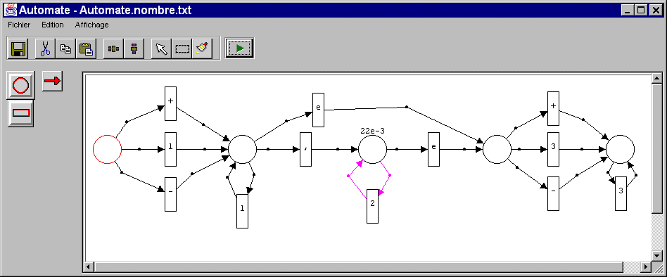

Note: Les premières versions, jusqu'à la 0.2d15, écrites intégralement par Jak, ne sont pas décrites ici.
Note: Les premières versions, jusqu'à la 0.2d15, écrites intégralement par Jak, ne sont pas décrites ici.
SEdit
La version décrite ici est la 0.2d16, résultat du merge de la 0.2d12 modifiée par mes soins et de la 0.2d15 de Jak.
Organisation des Packages
Chaque formalisme a son propre package (par exemple SEdit.Formalisms.Aalaadin), ceci pour faciliter un peu l'organisation. De plus, cela a l'autre avantage de préparer le terrain pour le passage en formalismes dynamiques en fichiers JAR.
La classe VerticalFlowLayout a rejoint le package SEdit.Graphiccs, vu que la spécification Java interdit toute modification aux hiérarchies java.qqchose
Modifications Diverses
- La classe SEdit du package SEdit a été renommée SEditApp
- L'impression fonctionne (à peu près). Encore un ou deux traits parasites qui proviennent sans doute de XOR résiduels sur les fléches.
Mécanisme de nommage de version avec une public static String VERSION dans la classe SEdit.SEditApp
- L'editeur est maintenant inséré dans une ScrollPane. Plus joli et plus pratique. Encore un probléme pour déterminer la taille initiale du Canvas (par ex en cas de chargement de fichier)
- Modifs des fichiers de configs du répertoire Fichiers pour qu'ils utilisent les nouveaux noms de classes.
A voir plus tard
Que modifier pour agentifier les editeurs dans MadKit é En particulier pour les modules Bric éouvrir récursivement. Rejoins le good old' problem de l'instanciation "automatique" d'agents dans la G-Box.
Que faire pour rendre SEdit un peu plus sexy par endroits ? (palette détachable ? Lightweights ?). Je ne suis pas fan de la méthode XOR pour les tracés. Voir l'utilisation d'un DoubleBuffer.
Faire une version CodeWarrior du project, et réussir à convaincre Jak de repasser sur CW/Win95 :-) (remarque de Jak: c'est fait, j'ai été convaincu...)
Intégration des icônes pour la visualisation des noeuds. Maintenant, on peut définir ses propres icônes à sa guise...
8/03/98 Jak - SEdit Version 03
Beaucoup de modifications. On est tres pres de la version 1.0...
Ajouts
- Les descripteurs de noeuds sont utilisés pour contenir des informations graphiques. Il est ainsi possible de décrire des caractéristiques associées à la visualisation des étiquettes (displayLabel), à leur présentation (labelLocation), à leur taille (rx et ry), etc...
- Les fléches peuvent maintenant avoir des descripteurs de "fins" d'un côté comme de l'autre (champs endingForm et startingForm dans SArrow).
- Il est possible de définir ses propres sous-classes de Structure (voir un exemple dans le formalisme Automaton) afin, par exemple, de définir des manipulations globales ou une manipulation de fichiers). Tout cela se fait automatiquement en mettant le nom de la nouvelle classe de structure dans le champ structureClass de Formalism.
- On peut ajouter ses propres commandes dans une toolbar. Pour cela il suffit dans la description du formalisme de mettre des instructions de la forme:
f.addToolElement("commande", "image");
et d'interpréter les commandes à l'aide de l'instruction command dans la structure correspondant. Voici par exemple l'interface graphique du formalisme Automaton. Voici par exemple, l'interface du formalismeAutomaton qui incorpore une commande supplémentaire "run" (la flèche verte aprés la toolbar standard) qui fait franchir la transition activée:

L'interface du formalisme Automaton appliqué à la description de l'automate de reconnaissance des nombres flottants.
Remarque: pour l'instant cette facilité n'est pas disponible à partir des formalismes d?finis dans des fichiers au format texte (voir plus loin).
- Le formalisme SimpleClass est un peu plus puissant, même si c'est encore très limité. Voici un exemple de son utilisation:
Les classes principales de SEdit, décrites dans le formalisme SimpleClass.
- Il est maintenant possible de lire un fichier de description de formalisme. Voir deux exemples, un peu jouets, mais instructifs dans le dossier formalisms. On charge un formalisme par la commande "ajouter formalisme" dans le menu. Voici par exemple le formalisme minimal (fichier minimal.fml) qui, comme son nom l'indique est effectivement minimal:
Un exemple de fonctionnement du formalisme minimal.
Pour l'instant, les possibilités sont encore limitées, puisqu'il n'est pas possible de décrire des commandes et des toolbar à partir de ce fichier. Mais cela ne saurait tarder.. De toutes façon cela sera disponible dans la version 1.0.
- Sur le plan visuel, on peut maintenant aligner verticalement et horizontalement les noeuds et les flèches dans l'éditeur. Attention: pour sélectionner un noeud, il suffit de sélectionner le milieu du noeud. Bug: cela ne marche toujours pas pour les connecteurs des modules (classes InPin et OutPin) qui se sont pas sélectionnées par le "lasso".
Corrections de bugs
Beaucoup de bugs ont été corrigés, mais je ne me souviens plus lesquels....
Général
Tout SEdit utilise maintenant Swing 1.0.1, il ne doit plus normalement rester une seule instanciation de classe AWT ou de composant Heavyweight.
Application principale
La liste a été réécrite sous forme d'un JTree. Les éléments chargés au départ ont leur arborescense et les formalismes chargés dynamiquement le leur.
Un menu option a été rajouté pour changer de look&feel Java.
Un dialogue de confirmation a été rajouté sur lors du Quit.
Définition de Formalismes
Rajout des mots-clés de propriété en tête de formalisme: authors et htmldoc. Ces propriétés sont parsées pour donner le menu "Aide" dans les StructureFrame.
Par exemple:
Formalism "Minimal" authors = "Jacques Ferber" htmldoc = "formalisms/minimal.html"Dans la classe formalisme, en plus du code de parsing, ont été rajoutés deux appels: setAuthors(String) et setDocURL(String) pour avoir les mêmes possibilités sous forme d'API.
Pour l'instant, la doc HTML est référencée depuis l'endroit du lancement de SEdit et sous forme de fichier local. Dans le futur, il serait souhaitable de:
- pouvoir regrouper la doc avec le formalisme et les images dans un fichier jar, et donc d'accéder avec les appels "ressources"
- pouvoir désigner une page Web distante commme doc de formalisme
Un bug corrigé dans le parseur de formalismes (propriétés)
Editeur de Structure
Toutes les icônes ont été vérifiées pour enlever les "effets 3D" désagréables avec le look&feel Metal ou Motif. Certaines icônes avait encore le mélange majuscule/minuscule empêchant l'affichage sur les plateformes non-windows, cela a été corrigé. Il semble y avoir dans certains cas un lock-up avec les formalismes à gif. A vérifier.
Le mode de sauvegarde du GraphicsContext nécessaire aux XOR de raffraichissement a été refait, il est maintenant dans paint() et non dans le addNotify(), et devrait être correct quel que soit la plateforme ou la hiérarchie graphique.
Un système de gestion de taille de la zone de dessin a été mis en place, la politique est la suivante:
- On démarre avec une taille par défaut (450x250)
- Si la fenêtre est resizée au dela, on augmente la taille
- Si la fenêtre est resizée en deça, on garde la taille et on met des scrollbars
- Si on charge un fichier de structure, on examine les SElements pour calculer une tailler de départ convenable (ajout d'une methode getDimension() dans la classe Structure).
Quelques bugs corrigés dans les positionnements de SElements. Un bug corrigé dans le popup-menu.
Dialogues d'ouverture et de sauvegarde de fichiers
L'enthousiasme de OlG fait plaisir, mais les dialogues d'ouverture et de sauvegarde de fichiers avec le look and feel "Windows" de Swing, lorsqu'on est sous Windows est absolument déplorable: les dialogues sont très lents et n'offrent pas la mêmes fonctionnalités que celles qui sont dans le noyau système de Windows 95. Donc, il y a maintenant un test: lorsqu'on utilise le look and feel "Windows", on utilise les dialogues de l'AWT qui sont beaucoup plus rapides et pratiques. Désolé OlG...
Définition de formalisme (fichier .fml)
- On peut associer une classe de structure à un formalisme définit dans un fichier (.fml). Il suffit d'indiquer la classe de la structure dans la propriété structureClass du formalisme. Par exemple, dans le formalisme Automate2, la classe de structure est définie ainsi:
structureClass = "Formalisms.Automaton.AutomatonStructure"
- Il est maintenant possible d'associer une collection à une propriété dans le fichier .fml. Les chaînes de caractères et les identificateurs sont considérés comme des chaînes, les nombres sont transformés en entiers. La lecture d'une telle collection retourne un vecteur. Les méthodes setProperty dans les classes Formalism et ElementDesc prennent maintenant en compte l'affectation de collection à une propriété. Il est aussi possible d'inclure des collections dans des collections. Par exemple:
popupMenu = {{"inspect", "inspect"}{"entrer mot", "enterWord"} {"supprimer", "delete"}}
Remarque: les ',' ne sont pas obligatoires. C'est juste pour faire joli. Les ' ' (espace) jouent le même rôle, celui de séparateur.
toolbar = {{"avancer", "run"}}
Les champs des noeuds (et des flèches, mais j'ai pas encore vérifié) peuvent être edités. il suffit pour cela d'indiquer dans le fichier de description du formalisme (fichier .fml), la collection de champs à éditer à la propriété editableFields.
editableFields = {label, "truc"}
Lorsqu'on demande l'inspection d'un élément, un dialogue se met en place (pour l'instant il est assez laid, mais on pourra arranger cela par la suite) et les champs qui ont été décrits dans editableFields peuvent être modifiés individuellement.
Corrections de bugs et autres petites modifs diverses
Ajouts et extensions
- checkTypes: une nouvelle méthode checkTypes a été ajoutée dans SArrow. Elle permet de vérifier que les noeuds d'origine et de terminaison d'une flèche correspondent bien aux types indiqués. Cela permet d'éviter la redéfinition de la méthode install, ce qui posait parfois problème. Voici par exemple l'utilisation de la méthode checkTypes dans la flèche PetriOutLink du formalisme "Petri avec simulation":
public boolean checkTypes(SNode from, SNode to, Structure struct) { if ((from instanceof PetriTransitionBehavior) && (to instanceof PetriPlaceBehavior)) return(true); else return(false); }On trouvera d'autres exemples dans le formalisme Bric (ArrowInConnect et ArrowOutConnect) ainsi que dans Etat-Transition (SimpleStateTransitionLink). Cette modification a été proposée (et réalisée) par Eric Burghard.
- Insertion de modèles. Il est maintenant possible d'insérer un modèle dans un autre à condition que le second soit dans le même formalisme que le premier. Il suffit d'utiliser la commande "insertFile" qui dispose d'un très joli icône
qui ouvre un dialogue. Il suffit de cliquer sur le fichier que l'on cherche à insérer dans le fichier courant. Des précautions ont été prises pour qu'il n'y ait pas de problèmes de nommage: on peut donc insérer plusieurs copies du même modèle. Cela permet ainsi de faire des "Templates" (ou schéma de modèle) à bon marché. J'ai utilisé cela pour Bric. Voir les exemples se trouvant dans le dossier (LivreSMA) qui contient des exemples de mon (excellent évidemment) livre.
- Beaucoup de modifs: en particulier une petite modif dans StructureFrame.java, dans SEditApp.java et dans StructureEditor.java (autant dire partout). Les modifications qui se trouvent dans ces fichiers sont commentées par:
// Modifs Jak Version 0.6 : ...
Pour ceux qui sont intéressés par le système de renommage des SElement lorsqu'ils sont insérer dans un autre modèle, tout se passe dans les méthodes Parse (essentiellement dans SNode, SArrow et SPin). On transmet un "environnement" sous la forme d'une Hashtable. Si l'environnement est différent de null, alors on associe dans cet environnement l'ancien nom et le nouveau. Ainsi les flèches, qui sont des associations entre deux noeuds, sont mises directement à jour lors du chargement. Les sous-structures (qui sont intégrées aux noeuds qui héritent de SCompNode) n'ont pas besoin d'être renommées puisqu'elles disposent déjà de noms locaux. Il suffit donc de renommer les éléments qui se trouvent au top-level d'une hiérarchie d'emboîtement. Et toc!!
- Descripteurs de flèches. Modifs des formalismes: il est maintenant possible de définir ses propres débuts et terminaisons de flèches dans un fichier .fml. Voir pour cela la description des formalismes.
Peu de modifications, surtout des corrections, donc pas de nouveau numero de version.
Corrections de bugs et autres petites modifs diverses
- Corrigé quelques petits problèmes d'affichage des liens inhibiteurs dans les formalismes Bric et Petri, dûs aux modifs effectuées dans la version 0.6.1.
Ajouts et extensions (qui auraient dûes être dans la version 0.6)
- Dans le formalisme Bric, les bornes d'entrées s'allument lorsqu'elles reçoivent un jeton (c'est très choli, choli..)
- Les formalismes Petri et Bric ont maintenant un "stepper", c'est-à-dire un bouton qui active l'une des transitions activables. Pour l'instant, le choix de cette transition est laissé au hasard (ou plus exactement à la fonction Maths.random de Java, qui ne correspond pas exactement au hasard...). Cela a conduit a distingué deux formalismes dans Bric: le "Bric general" et le "Bric module". Le premier contient le stepper, mais ne comprend plus les ports d'entrée-sorties (il est supposé être le module de haut niveau), et le second correspond à un formalisme de "module": il contient les ports d'entrée-sortie, mais n'a pas de stepper (on utilise le stepper du diagramme principal qui possède le formalisme Bric general). En fait, l'usage de deux formalismes dans ce cas pose un petit problème lors de l'insertion de fichiers. Si ce que l'on insère à été créé dans l'un des deux formalismes (general ou module), on ne peut plus l'utiliser dans un autre formalisme. Cela fait désordre et montre qu'il va falloir gérer un peu mieux les formalismes lorqu'ils sont "presque pareils". Une héritage entre formalismes peut être?
- Ajouté un lien "informateur" aux formalismes Petri et Bric. Ce lien qui est un lien PetriInLink active les transitions comme un lien consommateur, mais à la différence de ce dernier, il ne consomme pas les jetons de la place amont.
Une seule modif, importante quant aux formalismes, peu importantes en ce qui concerne SEdit même. Le besoin de pouvoir mettre les formalismes dans des .jars commence sérieusement à se faire sentir...
Modification des formalismes Petri et Bric
- Juste modifié les formalismes Petri et Bric (et les classes de liens, les places et les transitions) pour qu'ils puissent maintenant avoir des arcs valués (les poids). Il est possible de modifier ces poids, et on sauvegarde bien l'information sur ces poids.
- Dans le formalisme Bric (et donc Carisma) les bornes d'entrée (les SInPin) s'allument lorsqu'ils reçoivent un jeton...
Beaucoup de petites modifications mineures, mais surtout un développement important qui concerne le formalisme Object, lequel peut servir à la conception d'applications objets. Même s'il n'est pas totalement terminé (cf les limites actuelles), il me semble à peu près utilisable.
Cette version a pour ambition de durer un peu. Il n'y aura pas de modifications importantes sur cette version en attendant la 1.0 qui comprendra des modifications majeures: en particulier elle utilisera un nouveau format de fichiers (pour les formalismes comme pour les schémas) et contiendra un interprète Scheme (réalisé à l'aide de l'excellent Kawa) en interne. Cela vaudra le coup d'attendre.
Modifications mineures
- On peut avoir une nouvelle pointe de flèche sous l'appellation 'WHITESHARPEND' (en interne). Cela définit une plus grosse flèche dont la terminaison est blanche.
- La terminaison de type 'DIAMONDEND' dessine maintenant un losange. C'est très beau, si, si...
- On peut maintenant faire en sorte qu'une flèche n'ait pas de point de liaison. Elle devient toute droite. Il suffit que l'option 'directLine' soit à true. Pour ces modifications, voir le formalisme Object (qui s'appelle SimpleClassFormalism en interne). Voici la définition d'une flèche d'héritage dans ce formalisme:
ArrowDesc a3 = new ArrowDesc("InheritanceCC", "Lien d'héritage", "Object.InheritanceCC", "InheritanceC-C"); a3.displayLabel = false; a3.labelLocation = ElementDesc.displayTop; a3.directLine = true; f.addArrowDesc(a3);Développement du formalisme Object
Il est maintenant possible de concevoir des applications en suivant le modèle objet: Voici l'écran principal d'un modèle utilisant ce formalisme.
Les numéros correspondent aux nombres d'attributs (en bleus) et de méthodes (en rouge) que possède une classe. On peut créer des classes (en violet) ou des interfaces (en vert) définir des associations ou des agrégations entre classes, lier les classes (et les interfaces) par héritage. La cardinalité des relations est affichée.
Voici l'éditeur des propriétés d'une classe:
Chaque propriété ou chaque méthode peut être éditée séparément. Voici l'éditeur des méthodes:
et celui des attributs:
- Attention: les caractères 'µ', et '£' sont utilisés en interne pour la sauvegarde... Il ne faut pas les utiliser dans la documentation ou dans la définition de valeurs initiales. Bon, il faudrait faire mieux....
- On ne voit pas les propriétés héritées d'une classe
- Je crois qu'il y a un bug dans l'héritage des interfaces...
- La propriété "implémente" d'une classe n'est pas implémentée (c'est un comble)...
- Les caractéristiques des classes (abstract, public, etc..) dont il existe l'interface utilisateur, ne sont pas utilisable pour l'instant.
- Le formalisme n'est pas totalement UML pour des raisons de difficultés à afficher correctement les relations UML. De même, je ne suis pas un partisan de l'affichage des propriétés dans les classes. C'est pratique pour les tous petits modèles (avec des classes ne comprenant que quelques attributs et quelques méthodes). Mais bon, cette position peut être amenée à changer...
- Le champ 'Documentation' des classes n'est pas utilisable pour l'instant (pas eu le temps de le finir...)
- Surtout, il manque la possibilité de définir des modèles dynamiques à la "UML".
- La génération de code est très spartiate et plutôt minimale. Il y a pas de mal de travail à faire la dessus...
Les bonnes volontés désirant améliorer ce formalisme sont les bienvenues. Envoyer moi simplement un petit message...
Enfin la version 1.0!! Une grosse différence avec les versions précédentes: l'intégraton d'un langage de commande sous la forme d'un interprète/compilateur Scheme. La version utilisée est Kawa, la super implémentation Scheme en Java de bothner@cygnus.com. L'intérêt de cette version, entre autres, est de compiler Scheme directement dans la machine virtuelle Java. Du coup, les performances de Scheme ne sont pas ridicules. De plus, l'intégration de Scheme avec Java est très réussie, puisque le type générique des objets Scheme est java.lang.Object!
Du coup, SEdit utilise maintenant la syntaxe Scheme pour les fichiers des modèles comme pour ceux des formalismes. En fait, charger un modèle revient simplement à exécuter un ensemble de commandes écrites en Scheme. La description des commandes se trouve dans le fichier scheme.htm.Elle n'est peut être pas totalement complète, mais presque. Les fichiers de commandes se trouvent dans le directory 'Scheme', situé au premier niveau de SEdit. On y trouve en particulier init.scm qui contient toutes les commandes nécessaires écrites en Scheme, et Object.scm qui contient un ensemble de commandes utilisées par le formalisme Object.
On peut ouvrir une fenêtre d'évaluation comprenant deux editeurs de texte, le premier pour les commandes à évaluer, le second pour l'affichage des résultats. On peut ainsi voir ce que font les diverses commandes et les tester pas à pas.
En fait, extérieurement pas beaucoup de choses de changées, mais intérieurement, c'est énorme...
Déjà la 1.1.. Et oui! Cette version contient de nouvelles fonctionnalités:
Variables
- Ajout des variables globales *current-node*, *current-arrow* et *current-element* qui représentent respectivement le noeud qui vient d'être construit, la flèche qui vient d'être construite et l'élément qui vient d'être construit. Il suffit que *current-node* ou *current-arrow* soit positionné pour que *current-element* le soit aussi.
Caractéristiques des noeuds
- Tous les éléments (noeuds et flèches) peuvent avoir un commentaire. Ce commentaire est directement obtenable à partir du click droit de la souris sur un élément. Le commentaire est sauvegardé et affectable à un élément par la commande
(setComment elt com) où elt est un élément et com est une chaîne.- On peut associer aux flèches un "label" par défaut. Pour cela, il suffit de donner à la property defaultLabel la chaîne que l'on attribue par défaut à la flèche. Par exemple, dans le formalisme 'demo.scm'
(setProperty a 'defaultLabel "lié à")
la chaîne "lié à" sera attribuée par défaut à la flèche dont le descripteur est a.
Couper-coller
- SEdit dispose maintenant d'un véritable copier-coller interne!! On sélectionne une partie d'un diagramme et on peut le recopier sur tout autre modèle dont le formalisme est compatible avec celui de départ. Pour l'instant, la compatibilité signifie égalité. Mais on pourra par la suite envisager un héritage entre formalismes... Pour l'instant le copier-coller est interne à SEdit. On ne peut pas coller dans Word quelque chose que l'on vient de copier dans SEdit. C'est dommage, mais c'est pour plus tard.... Attention:
- Bug: le couper-coller ne fonctionne pas sur les formalismes emboîtés ni sur les SPin. De ce fait, le couper-coller ne fonctionne pas sur le formalisme Bric et ses avatars. Cela sera corrigé dans une prochaine version.
Mise à jour par rapport aux sources externes
- Tout SEdit a été mis en conformité avec Swing 1.1, ce qui permettra une intégration sans douleur avec les Java 1.2 d'une part et MadKit d'autre part. La partie la plus visible est évidemment la transition des packages com.sun.java.swing vers javax.swing. Search & replace is your friend....
- La partie Scheme a été mise en conformité avec Kawa 1.6.57. Il n'y a plus de hiérarchie kawa modifiée (les Kawa2 et autres ont été placées dans le package SEdit), le seul fichier d'archive à inclure est kawa.zip. But du jeu de l'ensemble: avoir un minimum de changements à effectuer au fur et à mesure que Per Bothner fait évoluer Kawa.
- Les libs externes kawa.zip et swingall.jar sont dans un répertoire libs, pour se mettre en cohérence avec MadKit.
Corrections diverses
- Plus aucun appel déprecié dans SEdit
- Passage des MethodEditor et AttributeEditor en public dans le formalisme object vu qu'elle sont utilisées en dehors de ClassEditor
- Y'a une (jolie ?) image SEdit pour l'about box et la future page web.
Mise à jour par rapport aux sources externes
- La partie Scheme a été mise en conformité avec Kawa 1.6.58.
Corrections diverses
- Remplacement du boolean directLine en lineStyle dans la classe SEdit.ArrowDesc, avec difinition des constantes DIRECT_LINE et BROKEN_LINE.